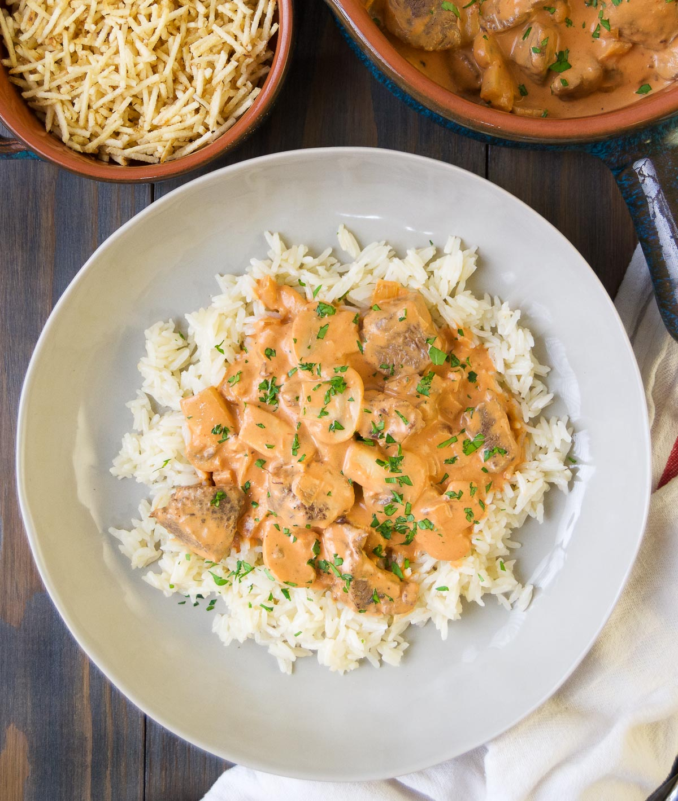

Chicken Stroganoff

Beef Stroganoff or beef Stroganov is a Russian dish of sautéed pieces of beef in a sauce of mustard and smetana (sour cream). From its origins in mid-19th-century Tsarist Russia, it has become popular around the world, with considerable variation from the original recipe. Mushrooms are common in many variants.
Ingredients
- 4 skinless, boneless chicken breast halves - cubed
- ⅛ cup margarine
- 1 (.7 ounce) package dry Italian-style salad dressing mix
- 1 (10.5 ounce) can condensed cream of chicken soup
- 1 (8 ounce) package cream cheese
Steps
- Put chicken, margarine, and dressing mix in a slow cooker; mix together and cook on Low for 5 to 6 hours.
- Add condensed soup and cream cheese. Mix together and cook on High until heated through and warm, about 30 minutes.